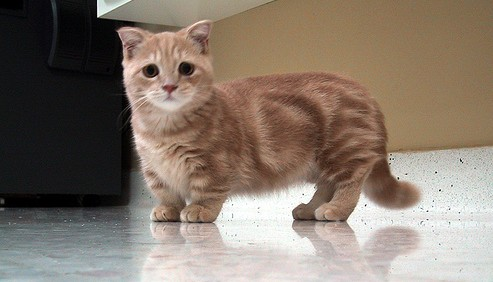

Канадски сфинкс
Произход и развитие
Породата Канадски Сфинкс е безкосместа, гола, наречена “лунна котка” и е получена вследствие мутация в щата Онтарио през 1966 г. Първоначално полученият гол котарак бил кръстосан със своята майка и поколението дало началото на нова порода. Освен с отсъствието на космена покривка, канадският сфинкс се характеризира с нежна кожа и намален ръст. Смята се, че безкосмести котки са отглеждали още древните ацтеки, а по-късно и мексиканците. И до днес в Мексико се срещат екземпляри от безпородни безкосмести котки, които през лятото са “голи”, а през зимата имат съвсем къса козинка на гърба. Породата е призната от всички световни организации.
Грижа за канадски сфинкс
Странно или не Канадския Сфинкс трябва да се къпе веднъж седмично. Канадския сфинкс има потни жлези и температурата на тялото му е с 1 градус по-висока. Задължително е използването на шампоан за котки с чувствителна кожа. Котките Сфинкс трябва да се хранят три или четири пъти дневно. Те имат нужда от повече храна в сравнение с котките, които имат козина. Повишената температура на тялото и по-бързата обмяна на веществата предизвикват нуждата от повече хранителни вещества.
Манчкин
История на Манчкин
Историята на котката Манчкин започва през 30-те години на ХХ век, когато в резултат на мутация се появяват котки с къси крака в различни краища на Европа. Породата започва да се оформя през 80-те години на ХХ век, когато в Луизиана, САЩ, се озовава женска котка с къси крака. Тя е чифтосана с мъжки с нормални крайници, но всичките котета от котилото се раждат с много къси крака. Късите крайници на Манчкин са резултат на мутация на ген, който отговаря за растежа на костите на краката. Тази мутация не засяга развитието на гръбнака и той е гъвкав като на останалите породи котки. След като американски селекционери започват да усъвършенстват породата, тя е официално призната и Манчкин се допуска до изложби и бързо става популярна в цял свят. Името си породата Манчкин получава от името на малките човечета, които са герои в книгата Вълшебникът от Оз.
Грижи за Манчкин
Манчкин има нужда да бъде къпан веднъж на три месеца, а козината му трябва да се разресва по-често, ако е дълга, и един-два пъти седмично, ако е къса. Не се препоръчва козината на Манчкин да се суши със сешоар, защото тези игриви котки не обичат силния шум. Очите и ушите на Манчкин редовно трябва да се почистват, за да се избегнат инфекции. Манчкин има нужда от свое легло, където да се чувства господар, тъй като заради късите крачета тази котка трудно ще се катери по леглото на стопанина си, освен ако не използва ноктите си. Манчкин има нужда от много играчки, за да се забавлява, докато стопанинът му е навън, за да не се заеме с това да унищожава меките мебели в къщата.

Може да храните Манчкин с висококачествени гранулирани или консервирани храни за котки или с натурални продукти. Ако изберете хранене с натурални продукти, добавяйте в менюто на Манчкин редовно витамини и минерали. Манчкин с удоволствие ще хапва всички видове месо, освен свинско, овнешко, патешко и гъше. Те са прекалено мазни за котките от тази порода. Месото винаги трябва да се дава сварено или печено, както и субпродуктите
Сиамска котка
История на Сиамска котка
Сиамските котки са развъдени в Сиам (днешен Тайланд) като аристократични котки. По онова време в Сиам тези котки са смятани за свещени. Сиамска котка са можели да притежават само кралските особи и будистките монаси.През 18 век кралете от Сиам са започнали да подаряват котки от тази порода на висши европейски сановници. Останалия свят бил силно впечатлен от тази прекрасна порода и така продължава разпростанението й. Така постепенно се пренасят в Европа а след това и Северна Америка, където стават доста популярни.След усилени селекции извън тяхната прародина е създадена и съвременната Сиамска порода, която значително се различава по доста признаци от старата порода, която е позната днес като Тайска котка
Отглеждане на Сиамска котка
Тези котки са чудесни домашни любимци, обичат да са сред хората, но със сигурност не са от най-тихите и мяукат доста силно. Сиамските котки са много своенравни животни, но въпреки това се привързват много силно към стопаните си. Дори се счита, че се привързват толкова силно колкото кучетата. Това значително ги отличава от другите породи котки, които се привързват най-вече към дома.Космената покривка на Сиамската котка е къса и поддръжката е доста лесна и не се изисква всекидневно разресване, за разлика от дългокосместите породи, които изискват постоянни грижи, като например Персийска котка.